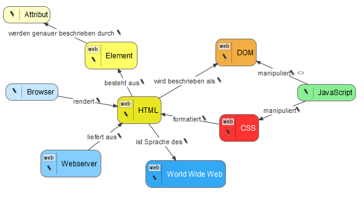

This tool converts a VUE concept map to HTML, Markdown, PDF and Libre-/OpenOffice ODT. Compared to the native export and print function of VUE it nicely outputs notes inside nodes and links.
Give it a try!

Want more features or found a bug? Post them on the Github Issue page.